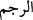

Teâlâ’nın herşeye kadir olduğuna şehadet ederim.” Sonra yoluna devam etsin.”
Denilir ki: Her kimi dinen yasaklanan uğursuzluk inancı, arzu ettiği bir hacetini
yapmaktan alıkoyarsa, uğursuz saydığı ve hoşlanmadığı o kötü şey başına gelir. Nitekim
Ikdü’d-dürer’de böyle geçmektedir.
“Eğer bu işten vazgeçmezseniz” Vallâhi bu sözünüzü bırakmaz, bize söylemekten
susmazsanız ve dâvânızdan vazgeçmezseniz “andolsun sizi taşlarız.” Taşa tutarız. “Ve
bizden size mutlaka fena bir kötülük dokunur,” dert/elem veren bir azab ulaşır. Yani
size bir-iki taş atmakla yetinmez bilakis öldürünceye kadar taşlamaya devam ederiz.
“dediler.” İşte elem verici azap budur. Ya da andolsun taşlama sebebiyle bizden size
elem verici bir azab dokunur.
Bazıları buradaki “
” kelimesini, sövmek ve hakaret etmek olarak tefsir
etmişlerdir. Buna göre mânâ ‘Biz sövmekle yetinmeyiz, bilakis sövmemiz dövmeye ve
fiziki şiddet ve işkenceye kadar uzanır’ demektir.
Hikaye edilir ki bir debbağ/derici, attarlar/güzel koku satanların çarşısına uğradı da
bayılıp yere düştü. Çarşı esnafı adamın başına toplandı. Güzel kokularla elden gelen
tedaviyi uyguladılar, fakat adamcağız ayılmadı. Hatta daha da ağırlaştı. Kimse adamın
neden bayıldığını anlayamadı. Sonra adamın yakınlarına durum haber verildi. Kardeşi
yeninde bir miktar köpek pisliğiyle geldi. Bu pisliği ezdi. Pisliğin kokusu burnuna
ulaşınca adam ayılıp kalktı. İşte kâfirlerin hâli de böyledir. Nitekim Mesnevî’de şöyle
der:
Öğüt verenler, ona amberle veya gülsuyuyla
Kapı açılması için ilâç yapıyorlar
Pislere, temizler yaramaz;
Uygun ve lâyık olmazlar, ey güvenilir kişiler!
Vahyin güzel kokusuyla, kendilerini kaybettiklerinde
Feryadları şuydu: “Sizinle uğursuzlandık.
Bizim eziyetimiz ve hastalığımız, bu sözlerdir.
Sizin vaazınız, fâl olarak bizim için iyi değildir
Açıkça öğüde başlarsanız,
Biz o anda sizi taşlayacağız
Biz boş şeylerle ve eğlencelerle semirdik,
Kendimizi nasihate alıştırmadık
Bizim gıdamız yalan, lâf ve düzendir.
Bu tebliğiniz bizim için mide bulantısıdır
Öğüt miskinin yaramadığı kişiler,
Şüphesiz kötü kokuya alışkındır
Hak, şirk koşanlara pis demiştir